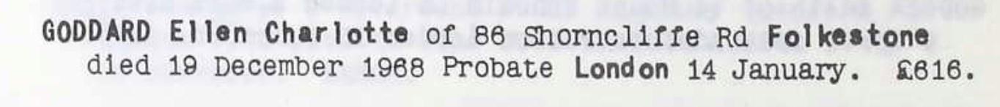

Ellen Charlotte Goddard cJan 1879 - 1968
[ Home ] | [ Calendar ] | [ Surnames Index ] | [ Errors ] | [ Family History ]A domestic housemaid and the child of Frederick Goddard (a plumber's labourer) and Charlotte Page (a laundress), Ellen Goddard, the second cousin twice-removed on the father's side of Nigel Horne, was born in Folkestone, Kent, England c. Jan 18791,2,3,4,5 and baptised there at St Peters on 15 Jan 1879.
During her life, she was living at Foord Road in Folkestone on 3 Apr 18811, on 5 Apr 18912 and on 31 Mar 19013; at 41 Augusta Gardens in Folkestone on 2 Apr 19114; and at 86 Shorncliffe Road in Folkestone in 1968.
She died on 19 Dec 1968 in Folkestone6.
Parents
- Frederick Steed was born in 1846
- Charlotte Ann was born c. Feb 1842
Citations
- 1881 England, Wales & Scotland Census - Findmypast (was age 2 and the daughter of the head of the household)
- 1891 England, Wales & Scotland Census - Findmypast (was age 12 and the daughter of the head of the household)
- 1901 England, Wales & Scotland Census - Findmypast (was age 22 and the daughter of the head of the household)
- 1911 Census for England & Wales - Findmypast (was age 32 and a servant in the household)
- England & Wales births 1837-2006 - Findmypast
- England & Wales deaths 1837-2007 - Findmypast
Media
Ellen Charlotte Goddard - Probate

England & Wales births 1837-2006 - BMD/B/1879/1/AZ/000221/079
Kent Baptisms - GBPRS/CANT/B/96670262
Family Tree

Map
Generated by ged2site. Last updated on Jul 3, 2024
Known Issues
Residence record for 1968 contains no citation
Location for 5 Apr 1891 (Foord Road, Folkestone, Kent, England) differs from mother's (65 Foord Road, Folkestone, Kent, England)
1939 UK register information missing